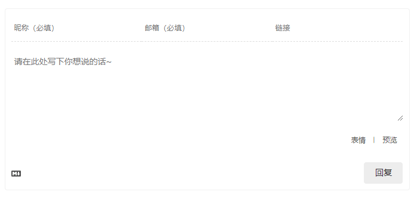
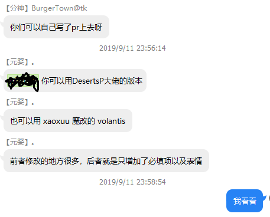

Next主题优化汇总
Next主题优化汇总
主题优化
由于hexo的主题优化相关已经有很多前辈分享过经验，如果有我觉得很完善的汇总博文，我会在下面直接贴出链接
界面美化
关于Hexo6.0搭建个人博客(进阶篇) 这篇博客包括了
- 配置博客基本信息
- 配置主题
- 优化主题
- 上传头像,并设置头像旋转效果
- 设置个人社交图标链接
- 设置RSS
- 设置酷炫动态背景
- 设置主题语言
- 设置网站logo
- 设置左上角或者右上角的fork me on github效果
- 设置顶部滚动加载条
- 自定义博客底部显示效果
- 为首页文章添加阴影边框效果
- 为首页添加自定义菜单栏标签
功能优化
大多数功能拓展
在做收尾工作时，我惊喜的发现alben.wong的博客里已经收录了大多数的功能拓展，相当感谢，这样也免去大家像我一样东拼西凑的麻烦。
- 如果在安装了hexo-admin和valine后，同时启动两者后台时，报错如下：ENOSPC: System limit for number of file watchers reached。可直接进入链接查看方案。
完善外链跳转
我遇到过关于站内跳转外链时无法正常跳转的问题，例如在“aysamu.space”下点开一个名为为“url”链接，结果进入的是“aysamu.space/url”，而不是我们希望进入的“url”。对此，我搜索到了下面的方案：对网页内跳转外链代码的改善。
valine评论框中设置必填项
刚开始我使用valine评论系统时，因其可匿名发布，使得评论区全都是匿名用户，看得头疼。我在一个大佬的博客里看到了他的valine中，昵称和邮箱是必填
项！像这样：

然后我就去问大佬，可惜他配置已经太久，忘了流程，把配置文件发给了我让我自个儿研究。但是，我拿着配置文件倒腾半天，没效果╯︿╰。于是，我，又双叒叕去问网友！群里的老哥很快就给了我回复！

DesertP的博客我之前看到过，可我比较懒，就选择使用volantis。然鹅，一进入conf我就麻了( ╯□╰ )。我的conf里并没有给出valine的引入配置，经询问后，得知我使用的5.1.4版本过低。
升级到Next6之后，又遇到了许多奇奇怪怪的问题……最终我决定还是回到已经大部分配置好的5.1.4，解决方案在下面。
- 轻车熟路，我找到了theme/next/layout/_third-party/comments/valine.swig，将引用valine.js/valine.min.js的src改成了由*BurgerTown@tk*分享的
https://blog-1253475808.file.myqcloud.com/custom_js/volantis.min.jsvolantis引用。成功搞定。
感想
在搭建hexo的过程中，我一次又一次的感受到来自陌生人的纯粹的善意。也许最初这只是我一次随意的尝试，但在与大家分享，交流后，我真切的喜欢上这样的氛围。这样的体验给我对所选择的专业的想法，对我希望进入的领域的想法，带来了相当的改变，我相信hexo的圈子只是一个缩影，为此，再一次感谢前方的开拓者们。
 wechat
wechat alipay
alipay